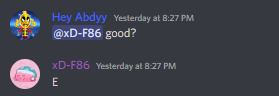
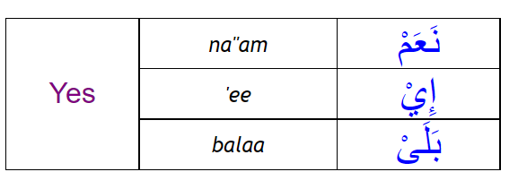

e, or E, is an old meme, and a way of expressing many different
emotions. Unlike other letters, especially "A," E can be used in a
variety of different situation. Just by the tone of your voice alone
you can express your thoughts with this one letter, and the other
person would understand what you are saying. E can even be used
in text.

Looking at this image, you can see that I asked xD-F86 a question.
"@xD-F86 good?" He responded by saying E. This shows that E can
be used
in casual yes/no answers, and in regular conversations that
take place
everyday.
To back this up with a credible source, according to Ram2424, formally known
as Ramyn2007, "First of all, the word yes contains the letter e, but the
word not does not contain the letter e. Secondly, the sound of the letter e
sounds more like you are trying to say yes and trying to agree with a statement
rather than saying no like you are disagreeing with something."
Compare this to other letters, such as "A". What does sayign A sound like?
Not much. A has a neutral type of sound, which means it does not have any
way of expressing thoughts or emotion. Furthermore, A is not as understandable
as e. This is due to the fact that it is not a commonly used letter. If someone
heard you saying A, they would be puzzled, and wonder... "What does A mean?"
You might say, if someone said E to someone, they would be confused as well.
This is somewhat true, but unlike A, E has more expression, which means the
person who was confused at why you said E, would be able to make an inference that
would allow them to at least guess what you meant by E.
You might not believe it but E is also apart of the arabic language. E can mean "yes."
In iraqi dialect, yes is known as "أي." If you were to pronounce this word, it would literally
mean "ee" or just "e." أي is not just some made up way to say yes, it is known by iraqi people.

Have you wondered what does making someone e mean?
Making someone e has many meanings in life...
Saying, "You are E!" can be good and bad.
First off, the E
in "You are E!" has no meaning really.
It just is E, you have
to interpert the tone to understand what it really means.
If someone says "You are E!" in an agressive tone, you know
that they are mad. But if they speak in a memeful, or happy tone,
you know that they are not mad.